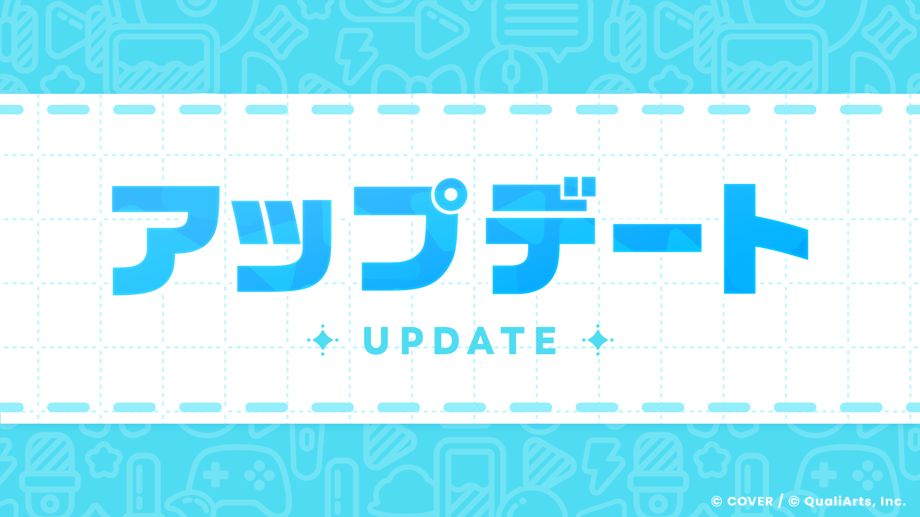
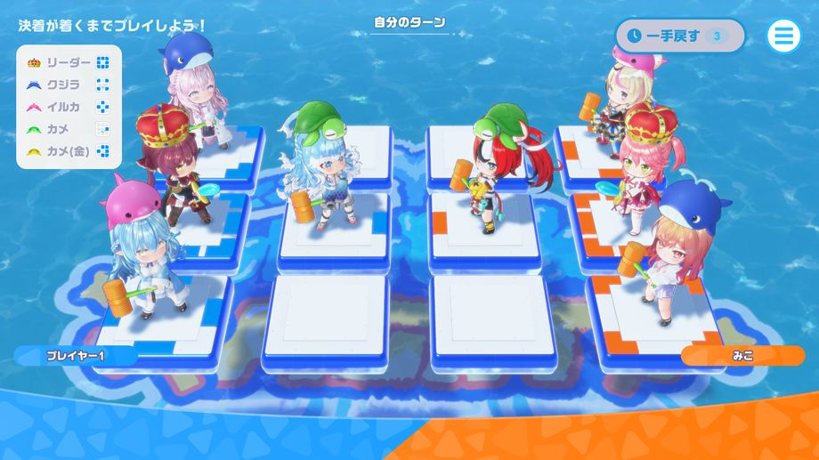
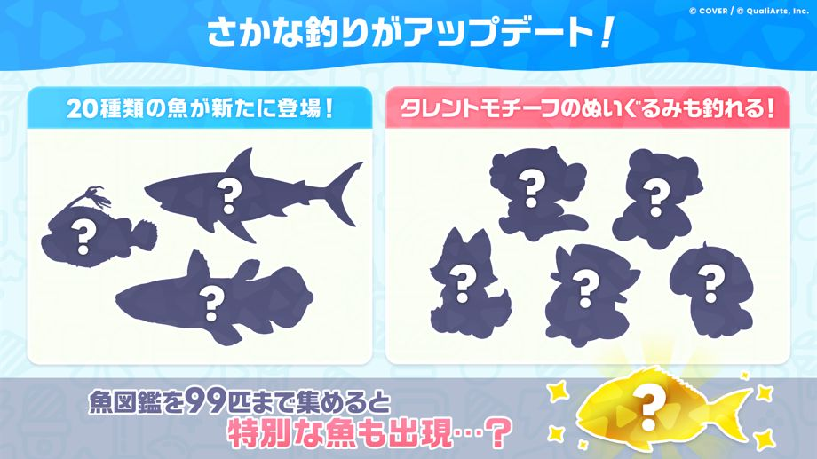
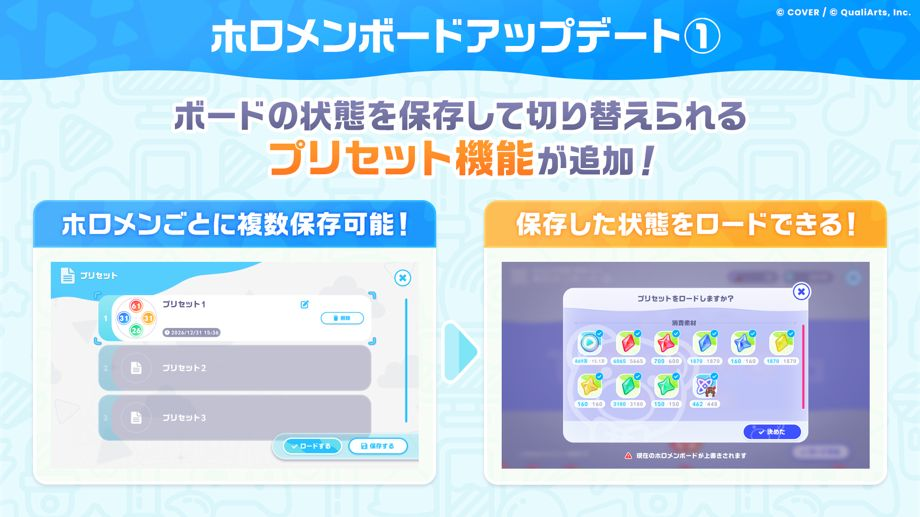
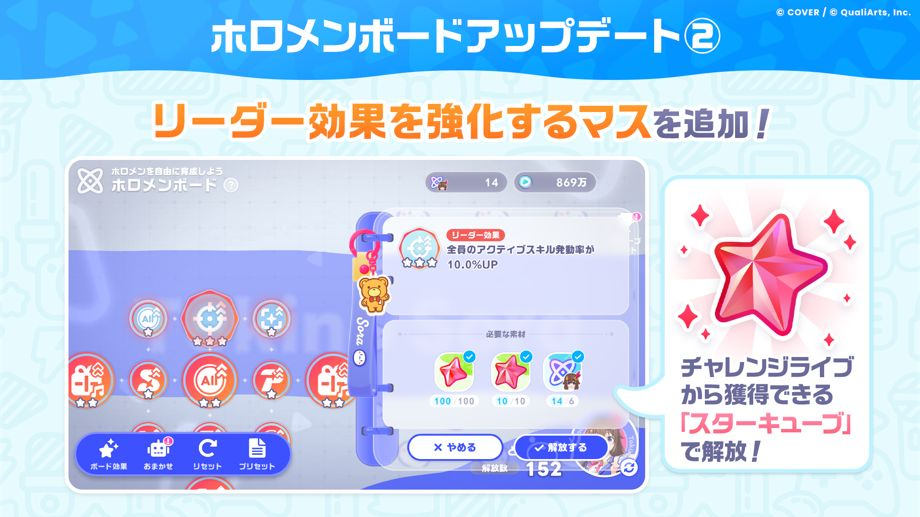

ご利用いただきありがとうございます。
「ホロライブドリームス」運営チームです。
2026-11-25 11:00:00に、Ver.1.3.0アップデートを行いました。
新ミニゲーム「ぷかぷかファイト」が登場

2026-11-25 11:00:00より、新ミニゲーム「ぷかぷかファイト」登場！
「ぷかぷかファイト」は水上の足場で相手を水に落としあう戦略ゲームです。
自分のチームのホロメンや仲間にしたホロメンたちをうまく動かすことで、ゲームを有利に進めよう。
ソロプレイで様々なホロメンと対戦したり、マルチプレイでほかのプレイヤーと対戦しましょう。
新コンテンツ「チャレンジライブ」が登場

2026-11-25 11:00:00より、新コンテンツ「チャレンジライブ」登場！
「チャレンジライブ」はステージごとに設定された目標スコアに挑む、新たなライブコンテンツです。
ステージのクリア報酬には、ホロメンボードに追加されたマスで使用する新素材「スターキューブ」も登場します。
ステージごとに設定されたボーナスメンバーを活かし、最上階「ステージ100」まで進めることができます。
その他アップデート
◆さかな釣りのアップデート

- 20種類の新たな魚が登場し、魚図鑑の達成報酬も解放されます。
-
釣り餌として「ミカン」「グミ」「星型のネリエサ」がベーズ・ビッツアンドボブスにて獲得できるようになりました。
「ミカン」「グミ」はソーダポップラグーンのメインクエストクリア、「星型のネリエサ」は魚を99種類釣ることで、それぞれ解放されます。
◆ホロメンボードのアップデート

-
「ホロメンごとのホロメンボードプリセット機能」
ホロメンボードの状態をホロメンごとに複数保存し、保存した状態をロードできるプリセット機能を追加しました。

-
「新素材が必要なマスを追加」
ホロメンボードへリーダー効果を強化するマスを追加しました。
追加したマスの解放にはチャレンジライブで獲得できる「スターキューブ」が必要になります。
◆ライブの改善・アップデート
- ライブブーストが貯まっている状態でも、ブーストを消費せずにライブができるようになりました。
- ライブブーストを大きく回復する際に、確認ダイアログを挟むように変更いたしました。
- ライブブースト回復画面にて、「<<」や「>>」を押下した際に、回復数が0、10、20、99と段階的に止まるよう改善しました。
- 選曲画面とスコアレート画面の遷移を改善しました。
◆その他アップデート
-
「複数のメンバーをまとめて開花する機能」
「専用開花Pt」で開花可能なメンバーをまとめて開花できるようになりました。 -
「開花メンバー選択画面に「ブルームストーンを使用」のチェックBOXを追加」
チェックを入れると、「ブルームストーン」を使用することで開花できるメンバーも表示します。 -
「開花画面に「ブルームストーンを使用」のチェックBOXを追加」
チェックを入れると、「ブルームストーン」も使用して開花します。
※ブルームストーン未所持の場合、チェックBOXは表示されません。
※「専用開花Pt」から優先して使用されます。 -
「メガスフィアコインがホロワークからも獲得可能」
メガスフィアコインがホロワークの「収録」、「雑談配信」からも獲得できるようになりました。 -
「ブルームストーン使用時に確認ダイアログを表示」
ブルームストーンを使用する際に確認ダイアログが表示されるようになりました。 -
「メンバー詳細画面にてメンバーの基礎パラメータのみを表示する機能」
ホロメンボードなどのボーナス効果を含まない基礎パラメータのみの表示ができるようになりました。 -
「ホロメンクエストでホロメンの近くへ移動できる機能」
ホロメンクエスト画面のホロメンアイコンから、対象のホロメンの近くへ移動できるようになりました。 -
「プロフィール公開範囲を項目ごとに設定できる機能」
項目ごとに「公開」「非公開」「フレンドのみ公開」から設定できるようになりました。
◆その他調整・不具合修正
-
ホロホームで受け取れるプレゼントを調整しました。
プレゼントの内容をどの曜日でも「ホロメダル」になるよう調整しました。 -
ソーダポップラグーンの「一条VIPラウンジ」で、特訓アイテムの色を変換できるようになりました。
ソーダポップコインを消費して、ピースやクリスタルを別の色のアイテムと交換できます。
※メインクエスト3章「ソーダポップラグーン」をクリアすることで解放されます。 - ハーモニーガーデンの隠しトレジャーの出現位置を一部調整しました。
-
ホロメンボードのアイコンを一部調整しました
対象：「アクティブスキル発動率UP」「スコアサポート効果」 - 一部ホロメンのライブ衣装の表情や色味などの調整を行いました。
- パークに落ちている物をよりスムーズに拾えるよう調整しました。
- 各種ミニゲームの軽微な不具合修正を行いました。
- その他軽微な不具合修正を行いました。